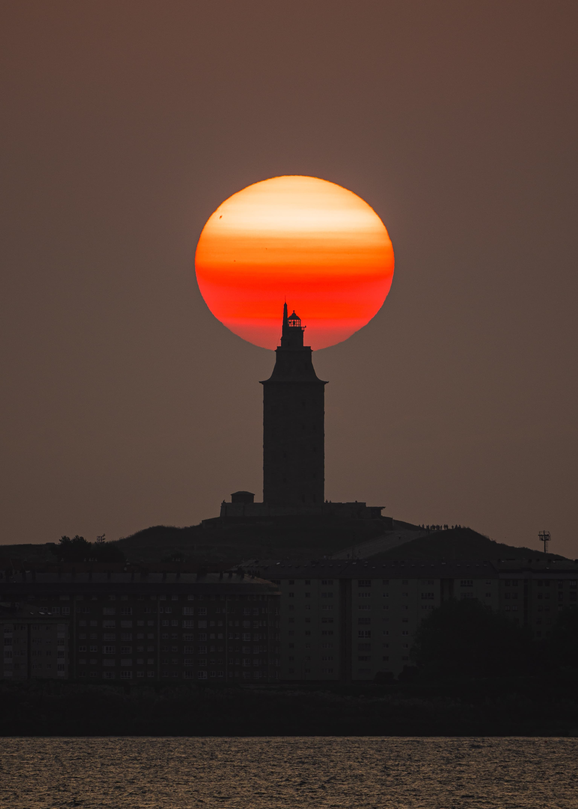
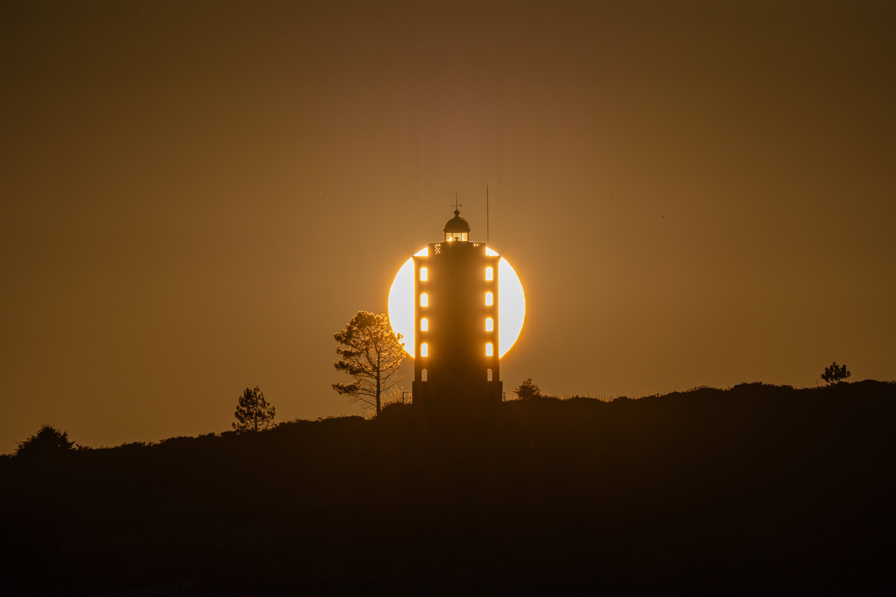
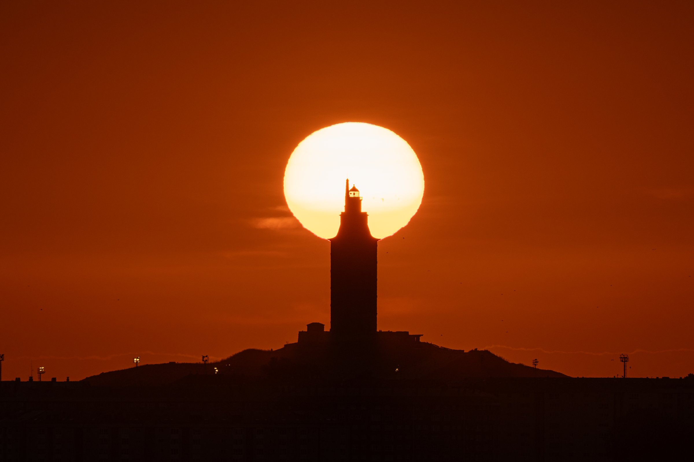
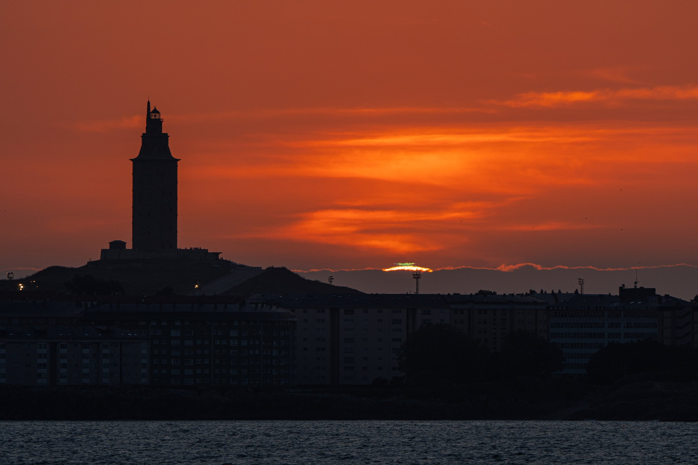
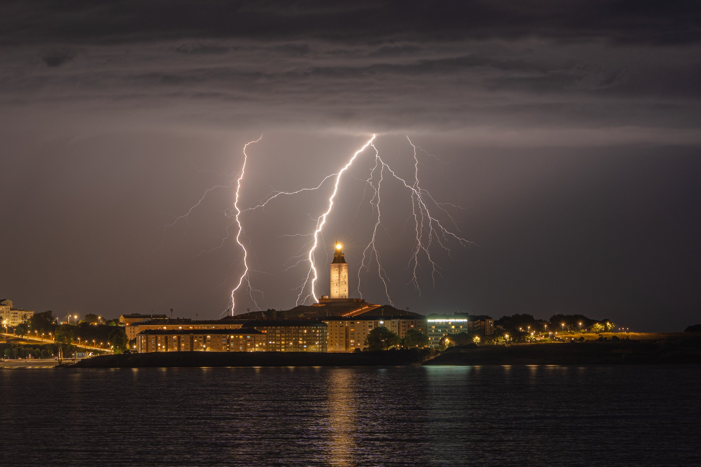
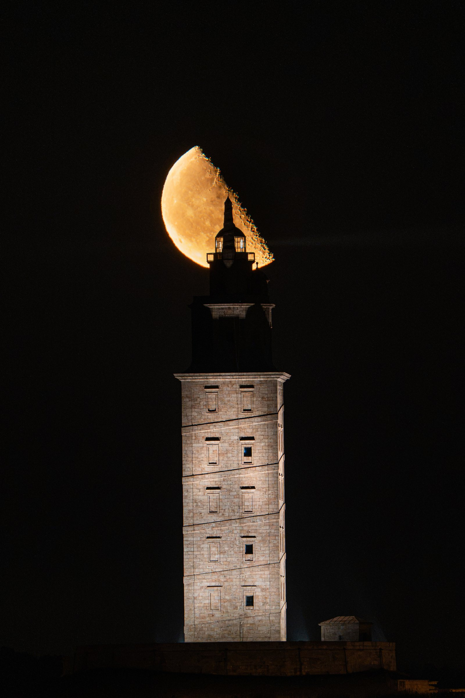

Encuentros de luz con la Torre de Hércules y el Faro de Mera bajo todo tipo de cielos: atardeceres, tormentas y lunas. Capturados con Sony a7IV y el 200-600mm desde varios puntos de A Coruña.





